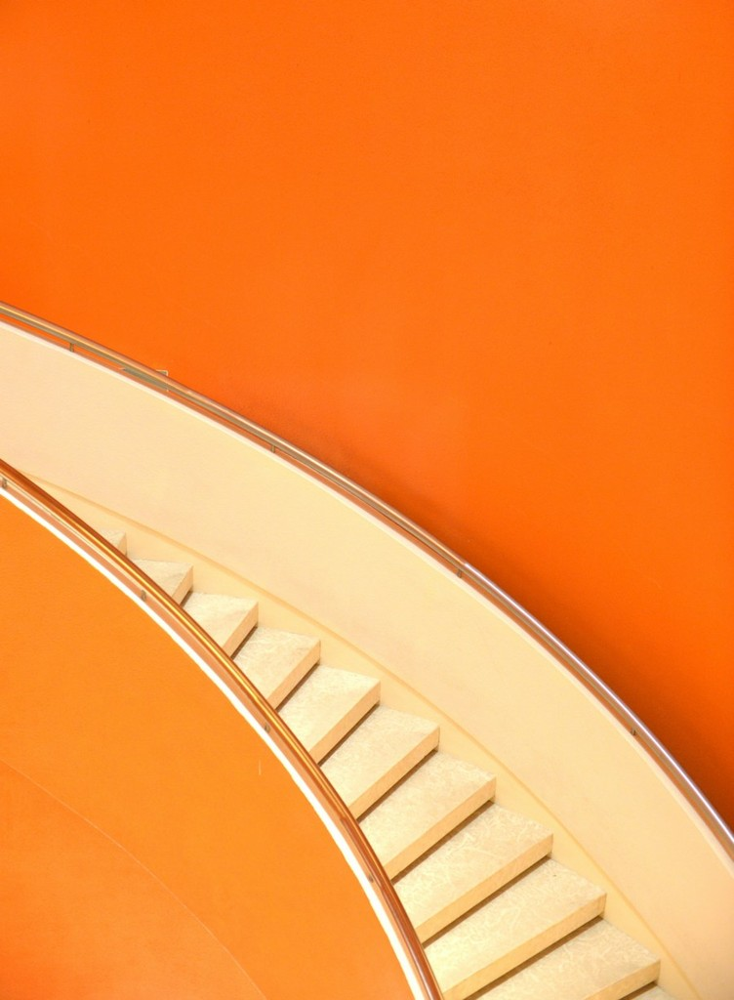
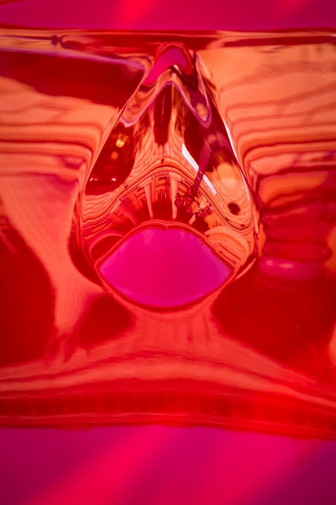

Fantasy sports for creators, on the one dataset Motion actually publishes. Five picks with a thesis and a pre-mortem each — locked, then graded against the next leaderboard window. Every call stays in the book, so you can check it.
The full Motion leaderboard, live from the official API. Rank, 4-hour movement and an estimated star rating — labelled as an estimate, because Motion Score itself is not public.

Five different creators under a 32-star cap. Every pick needs a reason it happens and a reason it fails — a lineup without reasoning is not a call.

Locking files the lineup under your X account and the server grades it against the next window. One receipt per handle per slot, so nobody re-rolls until one hits.
Open a question and it splits into its own card. The rest regroup around it, so the answer you want is the only thing on screen.
leaderboard.motion.game/api/leaderboard (official, unauthenticated). A cron snapshots all 79 creators every 4 hours; this page reads those snapshots. When a window has too few slots the field shows —, never a made-up number.